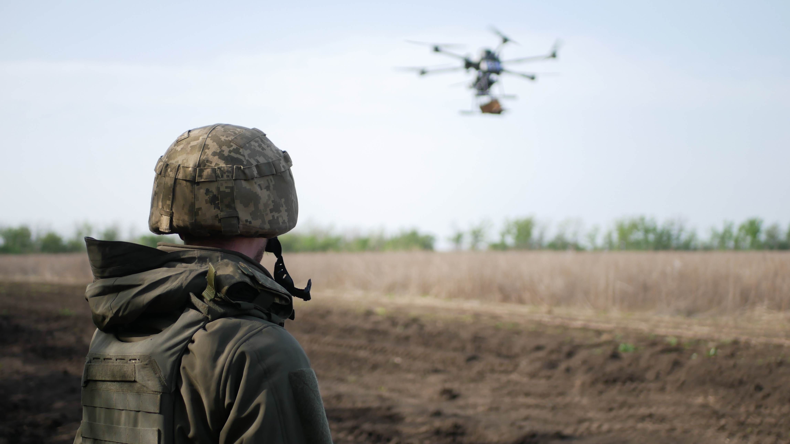

AI in the Defense Sector: Architecting the Future of Intelligent Warfare

Artificial Intelligence (AI) is fundamentally transforming the defense sector, not merely as a technological upgrade but as a paradigm shift in how military power is conceptualized, deployed, and sustained. The nature of warfare has always evolved alongside technological progress—from gunpowder to nuclear deterrence—but AI introduces a qualitatively different change: it embeds intelligence directly into systems, enabling them to perceive, learn, decide, and act at machine speed.
In modern defense ecosystems, the competitive advantage no longer lies solely in physical assets such as weapons, vehicles, or troop strength. Instead, it increasingly depends on information superiority, decision velocity, and system adaptability—all domains where AI plays a central role.
From Information Overload to Decision Dominance
Contemporary military environments generate unprecedented volumes of data. Surveillance satellites capture high-resolution imagery continuously, unmanned systems stream real-time video, radar systems produce dense signal data, and cyber infrastructure emits constant telemetry. Human operators alone cannot process this scale of information effectively.
AI addresses this challenge by transforming raw data into structured intelligence. Advanced machine learning models—particularly deep learning architectures—are capable of:
- Extracting meaningful features from unstructured data (images, video, signals)
- Identifying patterns and anomalies across multi-source datasets
- Prioritizing threats based on probabilistic risk assessments
This capability enables what defense strategists call decision dominance: the ability to observe, orient, decide, and act faster than adversaries. In practical terms, AI compresses the decision loop from minutes or hours to seconds, significantly altering the tempo of operations.
Autonomous Systems: Redefining Presence and Power Projection
Autonomous systems represent one of the most visible and impactful applications of AI in defense. These systems extend operational reach while minimizing human exposure to risk.
Types of Autonomous Platforms
- Aerial Systems (UAVs): Used for surveillance, reconnaissance, and increasingly for precision operations
- Ground Vehicles (UGVs): Deployed for logistics, bomb disposal, and terrain reconnaissance
- Maritime Systems (USVs/UUVs): Used for naval patrol, mine detection, and underwater surveillance
The intelligence of these systems lies in their ability to operate with varying degrees of autonomy. Modern AI enables:
- Real-time navigation in dynamic environments
- Object detection and classification (e.g., identifying vehicles or threats)
- Coordinated behavior in multi-agent systems (e.g., drone swarms)
Drone swarms, in particular, demonstrate emergent behavior where multiple units collaborate using decentralized intelligence. This introduces a new form of distributed warfare, where resilience and adaptability are built into the system architecture itself.
Intelligence, Surveillance, and Reconnaissance (ISR): From Collection to Cognition
ISR has traditionally focused on collecting vast amounts of data. The bottleneck, however, has always been analysis. AI transforms ISR from a passive collection mechanism into an active cognitive system.
AI-Driven ISR Capabilities
- Computer Vision: Automated analysis of satellite and aerial imagery to detect infrastructure, movement patterns, or anomalies
- Signal Processing: Identification of communication patterns and electronic signatures
- Data Fusion: Integration of heterogeneous data sources into a unified intelligence framework
For example, an AI system can correlate satellite imagery with ground sensor data and communication intercepts to identify suspicious activity with high confidence. This multi-modal intelligence fusion significantly enhances situational awareness.
Moreover, AI enables continuous monitoring rather than periodic analysis. Systems can flag deviations from normal patterns instantly, allowing for proactive intervention.
Cyber Defense and Offensive Cyber Capabilities
As defense infrastructure becomes increasingly digitized, cyberspace has emerged as a critical domain of warfare. AI plays a dual role here—both defensive and offensive.
Defensive Applications
AI-driven cybersecurity systems are designed to operate in environments where threats evolve rapidly and unpredictably. Key capabilities include:
- Anomaly Detection: Identifying deviations from normal network behavior
- Automated Response: Isolating compromised systems or neutralizing threats in real time
- Predictive Security: Anticipating vulnerabilities based on historical patterns
Unlike traditional rule-based systems, AI models can adapt to new attack vectors without explicit reprogramming.
Offensive Implications
Adversaries can also leverage AI to:
- Automate cyberattacks
- Develop adaptive malware
- Conduct large-scale information warfare
This creates an ongoing AI-driven cyber arms race, where both sides continuously evolve their capabilities.
Decision Intelligence: Augmenting Human Command
One of the most critical applications of AI in defense lies in decision support. Modern battlefields are characterized by uncertainty, time pressure, and incomplete information. AI systems assist commanders by providing structured insights derived from complex data.
Key Features of Decision Intelligence Systems
- Scenario Simulation: Modeling potential outcomes under different strategies
- Risk Assessment: Quantifying uncertainties and potential losses
- Recommendation Engines: Suggesting optimal courses of action
Importantly, these systems are designed to augment—not replace—human judgment. The goal is to combine human intuition and ethical reasoning with machine precision and speed.
This human-AI collaboration is often referred to as centaur systems, where the strengths of both entities are leveraged for superior outcomes.
Logistics, Maintenance, and the Invisible Backbone of Defense
While combat systems often receive the most attention, logistics remains the backbone of military operations. AI introduces significant efficiencies in this domain.
Predictive Maintenance
Military equipment operates under extreme conditions, making maintenance both critical and challenging. AI models analyze sensor data to predict failures before they occur, enabling:
- Reduced downtime
- Lower maintenance costs
- Increased operational readiness
Supply Chain Optimization
AI-driven logistics systems can:
- Forecast demand based on mission parameters
- Optimize delivery routes in contested environments
- Dynamically allocate resources
This transforms logistics from a reactive support function into a strategic enabler of mission success.
Ethical, Strategic, and Operational Challenges
Despite its transformative potential, AI in defense raises complex challenges that must be addressed carefully.
Autonomous Weapons and Accountability
The development of lethal autonomous systems introduces fundamental ethical questions:
- Who is responsible for machine decisions?
- Can algorithms be trusted with life-and-death outcomes?
Global discussions continue around the regulation of such systems, but consensus remains limited.
Data Dependence and Bias
AI systems rely heavily on training data. Incomplete or biased datasets can lead to flawed decision-making, which is particularly dangerous in high-stakes environments.
Vulnerability to Adversarial Attacks
AI models can be manipulated through adversarial inputs—subtle changes designed to deceive the system. Ensuring robustness against such attacks is a major research focus.
Escalation Dynamics
AI reduces decision-making time, which may inadvertently increase the risk of rapid escalation in conflict scenarios. Maintaining human oversight becomes critical in preventing unintended consequences.
The Road Ahead: Toward AI-Native Defense Architectures
The future of defense lies in AI-native systems, where intelligence is not an add-on but a foundational component. This involves:
- Edge AI: Processing data closer to the source (e.g., on drones or field devices) for real-time decision-making
- Multi-Domain Integration: Coordinating operations across land, air, sea, cyber, and space
- Human-AI Teaming: Seamless collaboration between operators and intelligent systems
- Continuous Learning Systems: Models that evolve based on new data and operational feedback
These advancements will redefine not only how wars are fought, but how deterrence, security, and global stability are maintained.
Conclusion
AI is not just enhancing defense capabilities—it is redefining the very structure of modern warfare. By enabling systems that can perceive, learn, and act with unprecedented speed and precision, AI shifts the balance from physical dominance to cognitive superiority.
However, the true power of AI in defense lies not in autonomy alone, but in responsible integration—combining technological innovation with ethical governance, strategic foresight, and robust system design.
For organizations building next-generation systems, this represents a critical opportunity: to engineer solutions that are not only intelligent and scalable, but also secure, reliable, and aligned with the broader goals of stability and peace.